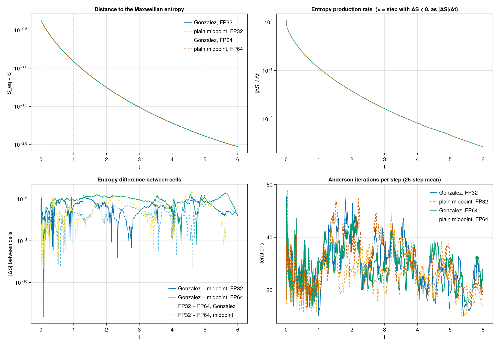

Gonzalez vs. plain midpoint: entropy in FP32 and FP64
use_gonzalez switches the discrete gradient of the implicit step between the Gonzalez form and the plain implicit midpoint rule (see picard_map! in solver.jl). Both were believed to increase the entropy monotonically. This page records a controlled comparison of the two, for the Landau operator, with the GPU collision kernel in FP32 and in FP64.
The expectation going in was: in FP64 the choice barely matters; in FP32 Gonzalez does better. The first half holds; the second does not. In all 22 Landau runs — 12,400 time steps from $t = 0$ to the near-equilibrium tail at $t = 32$ — neither scheme produced a single step with $\Delta S < 0$, in either precision. The two schemes' entropies differ by no more than the two precisions' do ($\lesssim 2.6 \times 10^{-6}$ against a total rise of $0.42$), and plain midpoint is the cheaper one.
What separates the two schemes
Write one implicit step as $v_1 = v_0 + \Delta t\, \dot v(v_\text{mid}, \overline{\nabla} S)$ with $\Delta v = v_1 - v_0$. The collision operator's mobility is positive semi-definite, so with either gradient the discrete production $\overline{\nabla} S \cdot \Delta v$ is $\ge 0$. What differs is whether that production equals the actual entropy change $S(v_1) - S(v_0)$:
- Gonzalez, $\overline{\nabla} S = \nabla S(v_\text{mid}) + \lambda\, \Delta v$, picks $\lambda$ so that $\overline{\nabla} S \cdot \Delta v = S(v_1) - S(v_0)$ exactly. Monotonicity is then exact — but only at the fixed point of the implicit solve.
- Plain midpoint, $\overline{\nabla} S = \nabla S(v_\text{mid})$, misses the entropy change by the midpoint-rule remainder of the line integral:
\[S(v_1) - S(v_0) = \int_0^1 \nabla S(v_0 + s\,\Delta v) \cdot \Delta v \, \mathrm{d}s = \nabla S(v_\text{mid}) \cdot \Delta v + \tfrac{1}{24}\, \nabla^3 S(\xi)[\Delta v, \Delta v, \Delta v] .\]
The remainder is cubic in $\Delta v$, while the production is quadratic in the distance from equilibrium (with $\Delta v \propto \Delta t$ times that distance). So, provided $\nabla S$ is the exact gradient of the entropy being tracked, the midpoint defect shrinks faster than the production as the run approaches equilibrium and can only flip the sign of $\Delta S$ at large $\Delta t$ or where $\nabla^3 S$ is large.
For Landau that proviso holds: compute_entropy_gradient! returns $\partial S_h / \partial v_\alpha = -w_\alpha \nabla (M^{-1} r)(v_\alpha)$, which is the chain rule through $v \mapsto b \mapsto c = M^{-1} b \mapsto S_h$, and compute_r! uses the same integrand and quadrature as compute_entropy. The Gonzalez term therefore only corrects a third-order quantity.
For Lenard–Bernstein it does not: LB uses the clamped pointwise $\nabla f_s / f_s$ as its base gradient in both modes (see Lenard–Bernstein (2D)), which is not $\nabla S_h$. Its plain midpoint has a first-order mismatch between production and entropy change, and there the Gonzalez $\lambda$ term is what restores monotonicity.
Design
Two axes, everything else held fixed; all cells ran sequentially on one RTX 4090 (Runpod Community) at commit 386ee1f, so host-to-host variation cannot be read as a scheme effect.
| axis | levels |
|---|---|
| discrete gradient | use_gonzalez = true (Gonzalez) / false (plain midpoint) |
| collision kernel | gpu_fp32 = true (FP32 pair math) / false (FP64) |
| held fixed | value |
|---|---|
| preset | parameters_LB_sq_d04.jl with collision_model = :landau, use_gpu = true |
| initial condition | anisotropic Gaussian $\sigma_1 = 4/3$, $\sigma_2 = 1/2$, $N = 40\,000$, seed = 42 |
| mesh, splines | bp1 = bp2, inner $\Delta = 0.4$; P_DEG = 2, K_REG = 1 |
| entropy integrand | use_logsq = true |
| solver | Anderson m = 8, damping = 0.7, tol = 1e-12, stag_window = 30, stag_rel_tol = 0.1 |
| schedule | DT $= 0.001$ for steps 0→1000 ($t = 1$), then DT $= 0.005$ to step 2000 ($t = 6$) |
| output | snap_every = 25 |
abs_floor follows the precision. The solve stops when $\lVert r \rVert < \max(\texttt{tol} \cdot \lVert v \rVert, \texttt{abs\_floor})$, and here $\texttt{tol} \cdot \lVert v \rVert = 10^{-12} \sqrt{2 E N} = 2.85 \times 10^{-10}$. FP64 reaches that, so FP64 cells keep the preset abs_floor = 1e-10; FP32 cannot, and asking it to just burns iterations in stagnation exits, so FP32 cells use abs_floor = 1e-8. Within each precision both schemes share the same floor, so the scheme comparison is unaffected. To separate precision from tolerance, each cell also gets a probe with the other precision's floor (below).
Probes at $t = 6$. From each cell's step-2000 state, three 200-step branches that differ from each other in exactly one knob: base (the cell's own settings, DT $= 0.005$), the floor swapped (FP32 at 1e-10, FP64 at 1e-8), and DT $= 0.001$.
Near equilibrium. At $t = 6$ Landau is still far from equilibrium ($S_\text{eq} - S = 9.4 \times 10^{-3}$, production $\sim 10^{-5}$ per step), which is not where a midpoint defect would show. All four cells were therefore also branched from one late state — step 7100 ($t \approx 30$, $S_\text{eq} - S = 8.9 \times 10^{-4}$, production $\sim 1.4 \times 10^{-7}$ per step) of the long FP32 Gonzalez run sq-d04-gpu1k32-dt5e3-af1e8-3070-2026-10-04 — for 400 steps at DT $= 0.005$, plus an FP32 pair at DT $= 0.01$ as a stress test (the midpoint defect grows like $\Delta t^2$ relative to the production).
A step counts as unconverged when its final residual is at or above the effective tolerance, i.e. it left the solve through the stagnation exit.
Results
Main runs, $t = 0 \to 6$
| cell | iterations / step (DT 0.001 · 0.005) | unconverged steps | steps with $\Delta S < 0$ | smallest $\Delta S$ | $S(t = 6)$ | max $\lvert \Delta E \rvert / E_0$ |
|---|---|---|---|---|---|---|
| Gonzalez, FP32 | 24.0 · 30.0 | 264 / 2000 | 0 | $1.34 \times 10^{-5}$ | 2.842272099 | $5.9 \times 10^{-8}$ |
| plain midpoint, FP32 | 21.8 · 26.3 | 199 / 2000 | 0 | $1.34 \times 10^{-5}$ | 2.842272292 | $5.9 \times 10^{-8}$ |
| Gonzalez, FP64 | 25.9 · 29.6 | 235 / 2000 | 0 | $1.34 \times 10^{-5}$ | 2.842271850 | $1.6 \times 10^{-10}$ |
| plain midpoint, FP64 | 23.5 · 30.6 | 221 / 2000 | 0 | $1.34 \times 10^{-5}$ | 2.842272007 | $4.4 \times 10^{-11}$ |
How far apart the trajectories are, over the same steps:
| pair | max $\lvert \Delta S \rvert$ | at $t$ | at $t = 6$ |
|---|---|---|---|
| Gonzalez − midpoint, FP32 | $1.9 \times 10^{-6}$ | 0.004 | $-1.9 \times 10^{-7}$ |
| Gonzalez − midpoint, FP64 | $2.0 \times 10^{-6}$ | 5.63 | $-1.6 \times 10^{-7}$ |
| FP32 − FP64, Gonzalez | $1.8 \times 10^{-6}$ | 5.63 | $+2.5 \times 10^{-7}$ |
| FP32 − FP64, midpoint | $2.6 \times 10^{-6}$ | 4.57 | $+2.8 \times 10^{-7}$ |
The scheme gap and the precision gap are the same size: switching the discrete gradient moves the entropy no more than the FP32 kernel's roundoff and the non-deterministic order of its GPU reduction do. Energy is where precision shows — FP32 drifts by $6 \times 10^{-8}$, FP64 by $\lesssim 2 \times 10^{-10}$ — and there the scheme makes no difference either.

Probes at $t = 6 \to 7$
| cell | branch | DT | abs_floor | iterations / step | unconverged | $\Delta S < 0$ |
|---|---|---|---|---|---|---|
| Gonzalez, FP32 | base | 0.005 | 1e-8 | 19.6 | 11 / 200 | 0 |
| floor 1e-10 | 0.005 | 1e-10 | 103.2 | 200 / 200 | 0 | |
| DT 0.001 | 0.001 | 1e-8 | 12.0 | 3 / 200 | 0 | |
| plain midpoint, FP32 | base | 0.005 | 1e-8 | 19.3 | 10 / 200 | 0 |
| floor 1e-10 | 0.005 | 1e-10 | 97.0 | 200 / 200 | 0 | |
| DT 0.001 | 0.001 | 1e-8 | 10.9 | 2 / 200 | 0 | |
| Gonzalez, FP64 | base | 0.005 | 1e-10 | 21.2 | 12 / 200 | 0 |
| floor 1e-8 | 0.005 | 1e-8 | 20.4 | 15 / 200 | 0 | |
| DT 0.001 | 0.001 | 1e-10 | 12.9 | 2 / 200 | 0 | |
| plain midpoint, FP64 | base | 0.005 | 1e-10 | 25.1 | 19 / 200 | 0 |
| floor 1e-8 | 0.005 | 1e-8 | 21.1 | 14 / 200 | 0 | |
| DT 0.001 | 0.001 | 1e-10 | 13.3 | 2 / 200 | 0 |
Asking FP32 for 1e-10 leaves every step unconverged at 5× the iterations and still produces no entropy decrease with either scheme: in the Landau runs an unconverged step has never shown up as an entropy drop. Loosening FP64 to 1e-8 changes nothing measurable either.
Near equilibrium, $t = 30 \to 32$ (all cells from one state)
| cell | DT | iterations / step | unconverged | $\Delta S < 0$ | smallest $\Delta S$ | total $\Delta S$ |
|---|---|---|---|---|---|---|
| Gonzalez, FP32 | 0.005 | 15.1 | 9 / 400 | 0 | $1.20 \times 10^{-7}$ | $5.8748 \times 10^{-5}$ |
| plain midpoint, FP32 | 0.005 | 13.8 | 5 / 400 | 0 | $1.20 \times 10^{-7}$ | $5.8765 \times 10^{-5}$ |
| Gonzalez, FP64 | 0.005 | 21.2 | 13 / 400 | 0 | $1.20 \times 10^{-7}$ | $5.8689 \times 10^{-5}$ |
| plain midpoint, FP64 | 0.005 | 16.1 | 8 / 400 | 0 | $1.20 \times 10^{-7}$ | $5.8706 \times 10^{-5}$ |
| Gonzalez, FP32 | 0.01 | 20.9 | 10 / 200 | 0 | $2.38 \times 10^{-7}$ | $5.8815 \times 10^{-5}$ |
| plain midpoint, FP32 | 0.01 | 20.2 | 8 / 200 | 0 | $2.39 \times 10^{-7}$ | $5.8837 \times 10^{-5}$ |
Even 400× closer to equilibrium than the main runs, and at twice the step size, the smallest entropy increment stays near its typical value — no step comes close to zero. From an identical state the two schemes' entropy gain over $t = 30 \to 32$ differs by $1.7 \times 10^{-8}$ (0.03 %); the two precisions differ by $5.9 \times 10^{-8}$ (0.1 %).
Earlier runs, same statistics
| S3 folder | operator | scheme | precision | abs_floor | steps ($t$) | unconverged | $\Delta S < 0$ (of which unconverged) | first at $t$ |
|---|---|---|---|---|---|---|---|---|
LB-sq-d04-gpu | LB | Gonzalez | FP64, CPU | 1e-10 | 8000 (8) | 1005 | 455 (455) | 0.78 |
LB-sq-d04-mid-gpu | LB | plain midpoint | FP64, CPU | 1e-10 | 8000 (8) | 87 | 188 (10) | 3.82 |
sq-d04-gpu1k64-dt-2026-10-02 | Landau | Gonzalez | FP64 | 1e-10 | 1500 (2) | 159 | 0 | — |
sq-d04-gpu1k32-dt-2026-10-02 | Landau | Gonzalez | FP32 | 1e-10 | 1500 (2) | 200 | 0 | — |
sq-d04-gpu1k32-dt5e3-af1e8-3070-2026-10-04 | Landau | Gonzalez | FP32 | 1e-8 | 7100 (30) | 381 | 0 | — |
This is the one place the schemes do behave differently, and it matches the mechanism above. In LB, every Gonzalez drop sits on an unconverged step — the discrete chain rule is exact only at the fixed point — while 178 of the 188 plain-midpoint drops are on converged steps: the first-order mismatch of the LB base gradient, surfacing once the production has decayed (from $t \approx 3.8$). Neither pattern appears for Landau.
Cost
Steps 0→2000 of each main cell (wall time includes about a minute of Julia start-up per phase):
| cell | Anderson iterations | wall | ms / iteration |
|---|---|---|---|
| Gonzalez, FP32 | 54,007 | 27.1 min | 30.1 |
| plain midpoint, FP32 | 48,093 | 23.1 min | 28.8 |
| Gonzalez, FP64 | 55,460 | 102.2 min | 110.5 |
| plain midpoint, FP64 | 54,178 | 98.0 min | 108.5 |
Plain midpoint saves 11 % of the iterations and 15 % of the wall time in FP32 (each Gonzalez iteration also pays for an extra projection and entropy evaluation of $v_1$), and 2–4 % in FP64, where the $O(N^2)$ FP64 pair sum dominates. Near equilibrium it needed 9 % (FP32) and 24 % (FP64) fewer iterations.
Conclusion
- FP64: no difference that matters — as expected. Both schemes are monotone throughout, and their entropies agree to $2 \times 10^{-6}$.
- FP32: Gonzalez is not better. Both are monotone; the scheme gap is no larger than the FP32-vs-FP64 gap; plain midpoint is faster. FP32 shows up in energy conservation ($6 \times 10^{-8}$), not in the entropy, and not differently between the schemes.
- Why: for Landau the plain midpoint already uses the exact gradient of the discrete entropy, so the Gonzalez term corrects an $O(\lvert \Delta v \rvert^3)$ remainder that stays far below the production at every step here. Gonzalez matters where the base gradient is not $\nabla S_h$ — the LB operator.
Scope: one initial condition (sq_d04), $N = 40\,000$, DT up to $0.01$, the Landau operator only for the new runs. The Gonzalez guarantee is still the only one that holds without the "exact gradient" proviso, and its $\lVert \Delta v \rVert^{-2}$ denominator gave no trouble down to $t = 32$.
Reproducing
One cell, both phases (suffix and folder names as on S3, with _ → - in the folder):
P="parameters_LB_sq_d04.jl --collision_model=landau --use_gpu=true --snap_every=25"
K="--gpu_fp32=true --use_gonzalez=false --abs_floor=1e-8" # FP32 plain midpoint
S=gzmid_mid32_4090_2026-10-08
julia main.jl $P $K --suffix=$S --N_STEPS=1000 --DT=0.001
julia main.jl $P $K --suffix=$S --N_STEPS=2000 --DT=0.005 --resume=autoFP64 cells use --gpu_fp32=false --abs_floor=1e-10. Probes copy a cell's checkpoint_<suffix>_step2000.jls and conservation_history_<suffix>.csv to a new suffix and run with --resume=2000 --N_STEPS=2200; the near-equilibrium branches do the same from step 7100 of the long FP32 run with --resume=7100. The S3 folders are gzmid-{gz,mid}{32,64}[-{base,af10,af8,dt1e3}]-4090-2026-10-08 and gzmid-neq-{gz,mid}{32,64}[-dt1e2]-4090-2026-10-08.